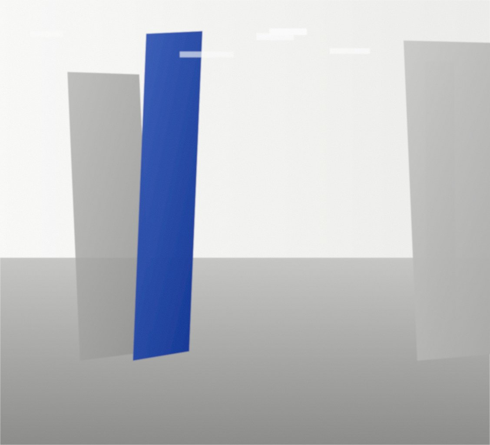
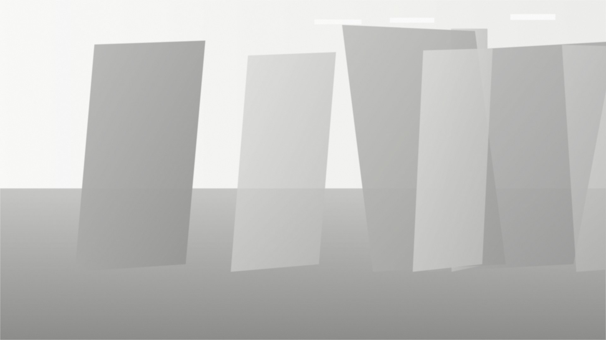
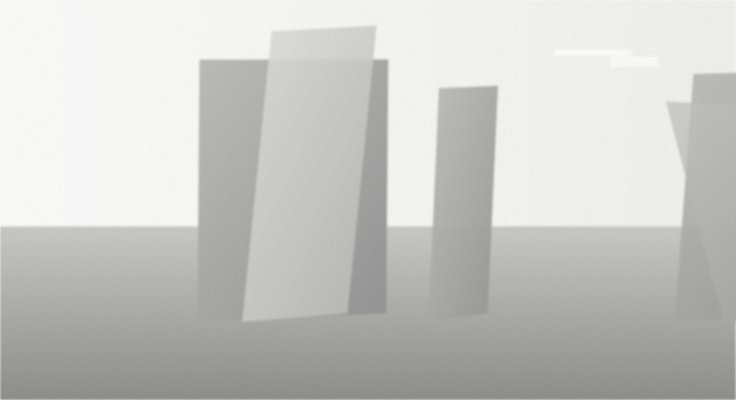
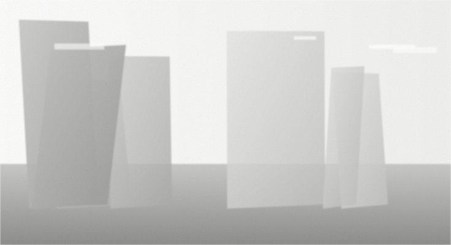
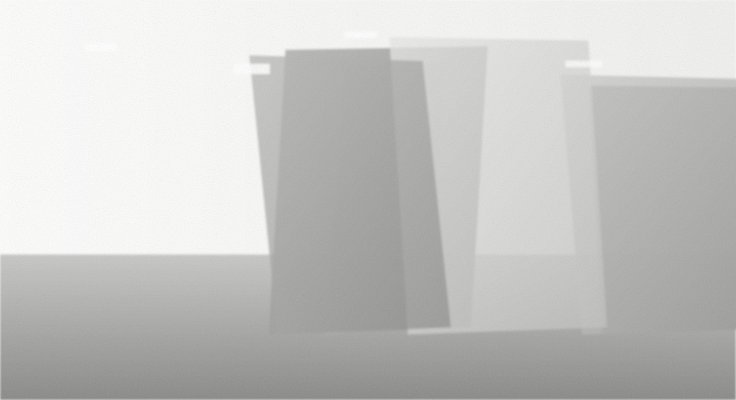
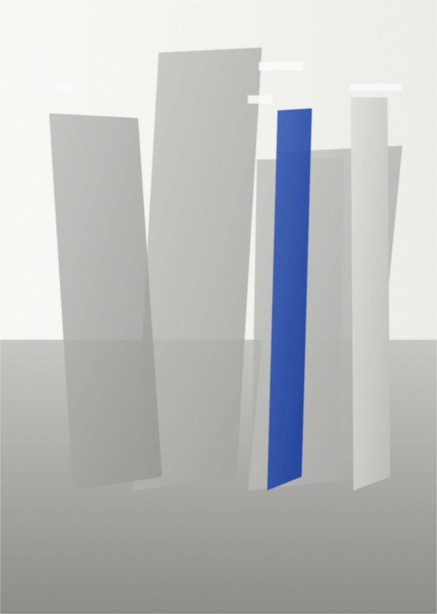

ZIFEIYU PPT SKILL
VOL. 01 — 2026
一份源文件
三种交付
浏览器里直接演示，再一键导出可编辑 PPTX、矢量 PDF 与逐页 PNG。
FIG. 01 — 示意图
ZIFEIYU PPT SKILL
VOL. 01 — 2026
浏览器里直接演示，再一键导出可编辑 PPTX、矢量 PDF 与逐页 PNG。
网页 PPT · 可编辑导出
FIG. 01 — 示意图
00 — CONTENTS
02 / 17
01
十二种风格，开场先挑一种
P. 04
02
先量后画，文字始终可编辑
P. 07
03
十六条规则，错误清零才交付
P. 10
04
从大纲到成稿的四步
P. 13
ZIFEIYU PPT SKILL · STYLE B — SWISS
NOTE — 设计原则
03 / 17
— SKILL.md · 设计原则
ZIFEIYU PPT SKILL · STYLE B — SWISS
CHAPTER 01 / 04
04 / 17
01
01 — STYLE INDEX
05 / 17
12
分五组：编辑排印、商务理性、舞台冲击、影像叙事、东方人文
A
B
C
D
E
F
G
H
I
J
K
L
SOURCE — 风格库设计规格 2026-10-08 §2
01 — BEFORE / AFTER
06 / 17
BEFORE
三套设计系统共用 L01–L24，换一个主题文件整套换色，版面结构始终一样。
24
个版式，三套系统共用
AFTER
十二种风格各有一套版式，按角色登记；校验与导出只认角色，不认风格。
12
种风格，各有一套版式
ZIFEIYU PPT SKILL · STYLE B — SWISS
02 — MEASURED EXPORT
07 / 17

导出器先让浏览器把每一页排好，再逐个量出元素的位置、尺寸、字号与颜色，按同样的坐标写进 PPTX。
圆角、描边、阴影、旋转与竖排换成 PowerPoint 原生形状；画不出的装饰单独截图，文字始终可编辑。
PRIMITIVES — ROUNDRECT · LINE · CHEVRON
ROTATE · SHADOW · EAVERT
FIG. 02 — 示意图

风格决定版面，版面决定一页能放多少字。
FIG. 03 — 示意图
08 / 17
02 — THREE PROMISES
09 / 17
01
方向键翻页，F 全屏，S 打开演讲者控制台，讲稿只给自己看。
02
文字是原生文本框，形状是原生形状，交给同事也能接着改。
03
十六条规则查版式、字号、出处与导出一致性，错误清零才交付。



FIG. 04 — 三幅均为示意图
03 — QUALITY GATES
10 / 17
16
20
3
R1–R16，从版式注册一路查到 PPTX 导出一致性
其中 12 个是每种风格必须覆盖的核心角色
PPTX · PDF · PNG，HTML 是唯一的源
SOURCE — scripts/validate.mjs · scripts/lib/roles.mjs
03 — RULES BY CONCERN
11 / 17
4
R3 · R4 · R7 · R9
4
R1 · R2 · R6 · R12
3
R5 · R8 · R14
3
R10 · R11 · R13
1
R15
1
R16
SOURCE — scripts/validate.mjs 规则注释（R1–R16），按守护对象分组
03 — SPEC SHEET
12 / 17
ITEM
SPEC
SOURCE
1280 × 720 px，导出时 px × 0.75 换算为 pt
assets/base.css
16 px，溢出先删字、再换版式
validate.mjs · R4
R1–R16，错误清零才能交付
validate.mjs
PPTX · PDF · PNG，HTML 是唯一的源
SKILL.md
20 个，其中 12 个核心角色
lib/roles.mjs
SIL OFL 开源字体，按 deck 用字子集化
fetch-fonts.mjs
SOURCE — 本仓库 SKILL.md · scripts/ · assets/base.css
04 — WORKFLOW
13 / 17
01
看风格画廊，按场合挑一种，整份 deck 只用这一种。
02
按内容形状找角色，复制版式骨架，只换文字和图片。
03
查类名、字号、出处与导出一致性，错误必须清零。
04
一键得到可编辑 PPTX、矢量 PDF 与逐页 PNG。
ZIFEIYU PPT SKILL · STYLE B — SWISS
04 — CHRONICLE
14 / 17
07.16
07.18
08.17
08.18
10.08
锁定设计系统的网页 PPT，确定性导出。
第二套设计系统：思源宋、暖纸、朱砂。
规则覆盖全部元素，文字分段原生导出。
第三套设计系统，加入数据叙事版式。
十二种风格，版式独立。
SOURCE — git log · 2026-07-16 → 2026-10-08
04 — LOOP
15 / 17
01
02
03
04
4
STEPS · LOOP
01
02
03
04
再回到改版式
SOURCE — scripts/baseline.mjs（基线前先过 check-style 与 validate）
04 — THREE LAYERS
16 / 17
BASE.CSS
STYLE.CSS
BRAND
OUTER — 外层
画布、元素契约、形状原语
MIDDLE — 中层
风格的 token、字体与全部版式
INNER — 内层
只改 token 的品牌色
SOURCE — 风格库 spec §3.1

FIG. 05 — 示意图
ZIFEIYU PPT SKILL
17 / 17
START — 新建 DECK
node scripts/new-deck.mjs my-deck --style swiss
风格画廊：docs/styles/index.html
STYLE B — SWISS · END